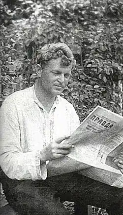

Народився 9 березня 1902 р. в селі Минківка, тепер Валківського району Харківської області, в родині залізничного службовця. У 1918–1921 рр. навчався в Катеринославській українській гімназії.
17-річним юнаком у липні 1919-го Мінько вступив до повстанського загону Трифона Гладченка (1891–1920), який боровся проти Денікіна і підписувався "заступником отамана козачих повстанських військ". Гладченка вдалося чекістам упіймати і розстріляти. А Мінько у 1920 р. став членом української молодіжної організації "Юнацька спілка", яка була створена на противагу комсомолу.
З 1921 р. М. Мінько вчителював на Вінниччині, перебував в армії. Тоді ж і почав писати. Перша повість "Манівцями" з'явилася у часописі "Червоний Шлях" (1927, № 2). Через три роки її розгромила критика, розцінивши як "наклеп на ГПУ". Протягом 1920—1930-х рр. М. Мінько написав кілька десятків оповідань. Та не щастило йому з більшими творами. Роман "Виселок у пилу" (1931) було вилучено як "шкідливий" і "наклепницький". Письменник пробує написати щось на догоду владі, і таким чином з'являється слабенька повість для дітей "Кокусники" (1931), але і її громить критика. Він починає писати роман, присвячений колгоспному будівництву, але кидає, зрозумівши, що річ вийде бездарною. Увесь цей час М. Мінько працює в редколегії дніпропетровського журналу "Зоря". У 1937 р. настає пік цькування письменників. Мінька звинувачують у наклепах на совєтську дійсність, називають "замаскованим націоналістом": "Зате контрреволюційних пасквілів на нашу дійсність, на меч пролетарської диктатури, на національну політику партії в "літературних працях" Мінька чимало. Такими "працями" він увійшов в літературу і набув в часи ткачуківщини і єфремовщини славу письменника, що подає надії, іншими словами, надійного зброєносця буржуазно-націоналістичної агентури фашизму", – писала обласна газета "Зоря" 9 вересня 1937 р., маючи на увазі Івана Ткачука, редактора журналу "Зоря", і професора Петра Єфремова, який друкувався у часописі. Письменника арештували 25 жовтня 1937 р. Під час слідства його катували, вимагали зізнання в приналежності до української націоналістичної терористичної організації. "Письменник Мінько мужньо тримався на допитах", – пише дослідник Микола Чабан. – Про це свідчить акт у його справі, складений оперуповноваженим НКВД Д. Платоновим 8 грудня 1937 р.: "В процессе допроса обвиняемого Минько Николая Григорьевича последний держал себя вызывающе. Клеветнически заявил, что он раньше думал, что те, кто попадают в НКВД, являются действительно врагами, теперь он убедился, что НКВД арестовывает напрасно безвинных людей, так же, как и он арестован напрасно". Опір нічого не дав. 15 грудня М. Мінька розстріляли. Через місяць заарештували і його дружину, поетесу Олену Шпоту, яка півтора роки провела у в'язниці. У лютому 1943 р. вона трагічно загинула під час авіанальоту совєтської авіації.